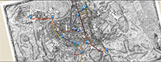

 MEL’s Travel Group focuses on Melville’s remarkable use of places in his writing, based on his travels in the South Pacific and Atlantic Oceans, England, the Continent, and the Middle East. Melville also drew upon his considerable reading to augment personal experience. This group of scholars has assembled Melville’s references to real, fictional, and mythic places in Moby-Dick and linked them in an Excel database to geospatial coordinates.
MEL’s Travel research group is using JUXTA EDITIONS to add geographical annotations to our MEL edition of Moby-Dick. In addition, we are currently using Hofstra Digital Research Center’s mapping / timeline / annotation tool ITINERARY to map Melville’s tours of Rome and London. These projects draw upon our edition of Melville’s journals. They will in turn serve as prototypes for our Melville in New York City project.
To view the Travel group’s database of places in Moby-Dick and the Itinerary prototype of “Melville in Rome,” click on the links below: